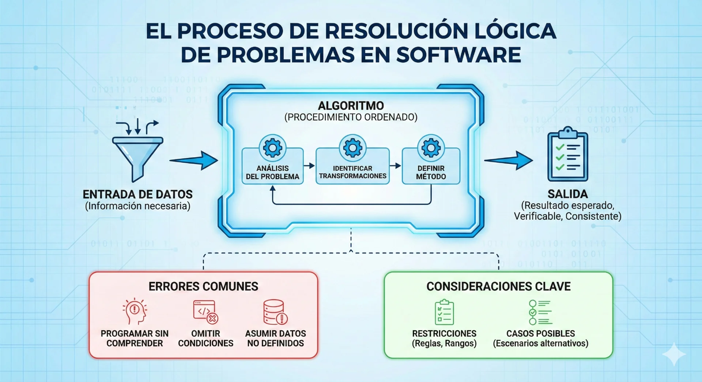
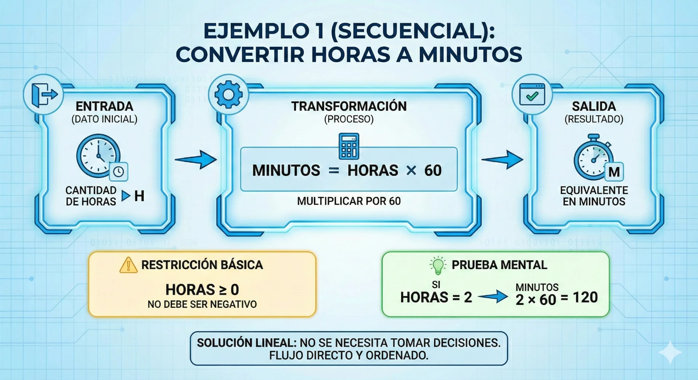

Identificación de problemas y soluciones lógicas
La identificación de problemas y soluciones lógicas constituye el primer paso crítico en el mundo del desarrollo de software. Antes de escribir una sola línea de código, un tecnólogo en desarrollo de software debe ser capaz de descomponer un problema, entender sus entradas y salidas, y estructurar un proceso lógico que lleve a la solución.
Esta temática se centra en el diseño de algoritmos, herramientas fundamentales que permiten modelar soluciones claras y coherentes mediante herramientas como el pseudocódigo o diagramas de flujo. A lo largo de este tema, exploraremos cómo la lógica aplicada permite transformar un requerimiento complejo en una serie de pasos lógicos y manejables.
Objetivos de aprendizaje
- ✓ 🔍Identificar los componentes básicos de un problema lógico y sus posibles soluciones
- ✓ 🧠Estructurar soluciones lógicas a través de pasos secuenciales coherentes
- ✓ ✍️Emplear estructuras condicionales en el diseño de algoritmos para la toma de decisiones
Identificación de problemas y soluciones lógicas
¿Qué es un problema lógico en programación?
En el contexto del desarrollo de software, un problema lógico es una situación que puede resolverse mediante un procedimiento ordenado (algoritmo). Resolver un problema en programación no es únicamente “llegar a una respuesta”, sino definir un método que, a partir de datos, produzca un resultado correcto, consistente y verificable.

Para analizar un problema con rigor, es importante identificar qué información se necesita, qué transformaciones deben realizarse y qué resultado se espera obtener. Esta lectura estructurada permite evitar errores frecuentes como: programar sin comprender el enunciado, omitir condiciones importantes o asumir datos que el problema no define. Además, todo problema suele estar condicionado por restricciones (reglas, rangos, formatos) y por casos posibles (escenarios alternativos según los datos), elementos que determinan si la solución será completa o si fallará en situaciones reales.
Ejemplo 1: Convertir horas a minutos
Enunciado: “Dado un número de horas, convertirlo a minutos.”
Restricción básica: el número de horas no debe ser negativo.
Prueba mental: si horas = 2, entonces minutos = 2 × 60 = 120.
En este caso la solución es lineal, no se necesita tomar decisiones.

Del enunciado a la solución: análisis y descomposición del problema
Antes de diseñar la solución, se recomienda seguir una ruta de análisis que permita convertir el problema en pasos lógicos:
Esta etapa es fundamental porque un algoritmo claro nace de un problema correctamente interpretado.
Ejemplo (condicional): Aprobó o no aprobó
Enunciado: “Un estudiante aprueba si su promedio es mayor o igual a 3.0. Mostrar ‘Aprueba’ o ‘No aprueba’.”
Restricción: las notas deben estar en un rango válido (0.0 a 5.0).
Casos posibles:
Promedio ≥ 3.0 → “Aprueba”
Promedio < 3.0 → “No aprueba”
Prueba mental:
3.0, 3.0, 3.0 → promedio = 3.0 → Aprueba
2.5, 2.8, 3.0 → promedio ≈ 2.77 → No aprueba
Aquí sí se requiere una toma de decisión, por eso el algoritmo no es solo secuencial.
Criterios de Evaluación de la Solución
Para que una identificación y solución de problema se considere exitosa en este nivel, debe cumplir con los siguientes indicadores de calidad establecidos en el curso:
✍️ Actividad 1: Del enunciado a la solución lógica.
Propósito: que el estudiante analice un problema, identifique información necesaria, reglas, casos posibles y plantee una solución lógica clara.
Enunciado
Una tienda virtual necesita calcular el valor final de una compra.
El cliente ingresa el valor de la compra y el sistema aplica estas reglas:
Si el valor de la compra es mayor o igual a $200.000, se aplica un 10% de descuento.
Si el valor de la compra es menor a $200.000, no hay descuento.
El sistema debe mostrar el descuento aplicado y el total a pagar.
Instrucciones (entregable)
Escribe, con tus palabras, qué pide el problema (máximo 3 líneas).
Identifica:
dato(s) necesario(s) para resolverlo,
resultado(s) esperado(s) que debe mostrar el sistema.
Escribe las restricciones mínimas del problema (por ejemplo, valores inválidos).
Define casos posibles (mínimo 2) y explica qué pasa en cada uno.
Propón la secuencia lógica de pasos (leer → validar → calcular → decidir → mostrar).
Realiza una prueba mental con dos valores:
Caso A: compra = $250.000
Caso B: compra = $150.000
(Muestra descuento y total en cada caso).
Criterios de revisión: coherencia del flujo, claridad de pasos, identificación correcta de reglas/casos y prueba mental consistente.
Evaluación
Instrucciones: marca la opción correcta
Evaluación
1. ¿Cuál es el objetivo principal de analizar un enunciado antes de escribir un algoritmo?
2. En el problema: “Calcular el total a pagar aplicando 10% de descuento si la compra ≥ $200.000”, ¿cuál es la condición que genera una decisión?
3. En una solución lógica, una restricción es
4. ¿Cuál de los siguientes ejemplos se resuelve típicamente de forma secuencial (sin decisiones)?
5. ¿Qué significa “probar mentalmente” una solución?
Recursos para profundizar
-
Pseudocódigo y diagramas de flujo
Ir al recursoExplica el uso de algoritmos como pasos ordenados, parte del diagrama de sistema y enfatiza identificar variables de entrada y resultados esperados para luego relacionarlos con un procedimiento; además, presenta pseudocódigo y diagramas de flujo, incluyendo decisiones.
-
Introducción al Pseudocódigo
Ir al recursoDefine la prueba de escritorio como verificación funcional inicial del algoritmo y muestra cómo armar una tabla con variables, condiciones y salidas, con un ejemplo de “notas” que incluye condición (aprobar/no aprobar).
Bibliografía
- Adecco. (s.f.). Diferencias entre razonamiento inductivo y deductivo: Ejemplos y aplicaciones. Orientación Laboral. Recuperado de: https://www.adecco.com/es-es/empresas/insights/orientacion-laboral/razonamiento-inductivo-vs-deductivo
- Perelman, C. (2007). Lógica formal y lógica informal (Trad. P. A. González). Praxis Filosófica, (25), 139-144. Recuperado de: http://www.redalyc.org/articulo.oa?id=209014642009.
- UNESCO – OREALC. (2005). Educación matemática en contextos rurales latinoamericanos: Proyecto regional. Recuperado de: https://unesdoc.unesco.org/ark:/48223/pf0000143685.
- Rodríguez Garcés, C., Romero Garrido, D., Espinosa Valenzuela, D., & Padilla Fuentes, G. (2025). Competencias de razonamiento lógico-matemático en estudiantes de pedagogía formados en contexto de pandemia. PARADIGMA, 46(1), e2025024. https://doi.org/10.37618/PARADIGMA.1011-2251.2025.e2025024.id1617
- Suñer-Rivas, Eneyda (2011). Competencias en lógica. Iteso. Recuperado de: https://rei.iteso.mx/items/b5a25af3-f9f4-4175-9489-1442dd4ad720